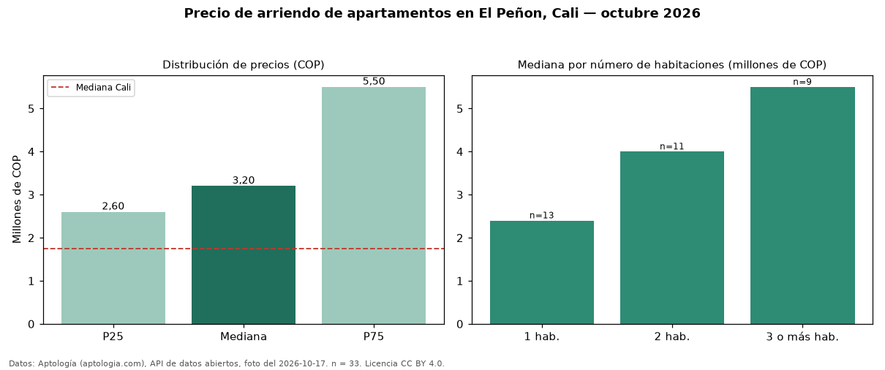

Precio de arriendo de apartamentos en El Peñon, Cali — octubre 2026
Con 33 avisos vigentes, el canon mediano de apartamentos en arriendo en El Peñon, Cali es COP 3.200.000 al mes. Comparado con la mediana de la ciudad, COP 1.750.000, la diferencia es de 83 % por encima. Con la mediana de venta del mismo barrio (COP 750 millones), el arriendo anual equivale a 5,1 % del precio de venta: una aproximación gruesa a la rentabilidad bruta, porque compara medianas de ofertas distintas. El segmento con más oferta es el de 1 habitación (13 avisos, mediana COP 2.400.000); pasar de 1 habitación a 3 o más habitaciones sube la mediana 129 %. La dispersión es alta: el cuartil superior (COP 5.500.000) es 2,1 veces el inferior (COP 2.600.000). Por mediana, es el puesto 8 de 19 barrios de Cali con al menos 30 avisos de apartamentos en arriendo: en la franja media. 67 % de los avisos incluye parqueadero, y su mediana (COP 5.250.000) está 64 % por encima de la general. Datos: Aptología (aptologia.com), API de datos abiertos, licencia CC BY 4.0 — https://www.aptologia.com/arriendo/cali/el-penon. Archivos: PDF de 2 páginas, CSV con las cifras y gráfica PNG.

| Avisos únicos | 33 |
|---|---|
| Percentil 25 | COP 2.600.000 |
| Mediana | COP 3.200.000 |
| Percentil 75 | COP 5.500.000 |
Fuente: avisos vigentes de portales inmobiliarios recopilados por Aptología, deduplicados (mínimo 30 avisos únicos por celda). Precios pedidos, no cerrados. Fecha: 2026-10-18.